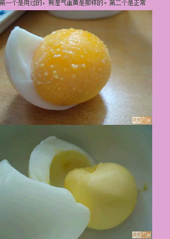

你是否也感觉到下午的时候手脚容易发胀 ， 穿鞋感觉紧一些呢 ？ 手上出透明小疹很痒 。 这其实是因为气温升高让身体的湿气开始往外代谢了 ！ 会感觉到手脚发胀痒 ， 是因为咱们身体里的湿气比较多 ， 不能及时完全代谢出去 ， 就滞留在皮下引起皮下水肿 ！ 您可不能忽视哦 ！ 因为身体的湿气长期不代谢出去会导致我们变成肌瘤体质的 ！
适用人群
所有人 ， 尤其是身上容易起风包 ， 并且经常在潮湿的天气里身体痒的人 。 如果下身也痒或者有异味 ， 就更要使用了 。 另外 ， 生过病和小产过的女性尤其适用 。
材 料
挑选新鲜的鸡蛋 2 个 ， 清水半锅 。 注 ： 有条件的最好用土鸡蛋 。
方 法
半锅开水 ， 水最好能将鸡蛋全部覆盖 ， 开大火 ， 然后马上将带壳鸡蛋放进锅里煮 ， 水开三分钟后将火调到最小 ， 再煮 15-20 分钟 ， 关火 ， 闷一两分钟 ， 用笊篱取出鸡蛋 ， 趁热包皮 ， 请注意一定不要把鸡蛋弄破 。 趁热将鸡蛋放在脸上滚 ， 快速的 （ 因为太烫 ）， 主要是眼睛和额头 ， 然后把面部其他位置都滚到 。 直到鸡蛋没有热度 。 症状 ： 拨开蛋清 ， 如果蛋黄上起满了小点点 ， 说明有风气 ， 风气的大小根据小点点的大小和数量不同而不同 。 如果蛋黄变黑 ， 说明有湿毒 ， 湿毒大小依蛋黄颜色深浅不同而不同 ， 这个自己都可以根据肉眼判断 。
另 外
根据这个方法 ， 还可以将下身 ， 四肢 ， 前胸和后背的湿毒和风气吸出来 。 其中下身 （ 外阴 ） 和腿上的风气呈现条形状 ， 与脸上和上身不同 。
注 意
1、 鸡蛋一定要热 ， 如果不热了 ， 可以再煮一下继续滚 。
2、 第一次使用滚脸后 ， 额头会很痒 ， 是因为风气被吸出来了 。 第一次在胳膊和腿上使用后 ， 小腿和肩膀会很痒 ， 这也是风气和湿毒被吸出来的信号 。 下身被吸后 ， 明显不再肿胀和有异味 。
3、 如果这是您第一次使用这种方法 ， 而且您的风气和湿毒还比较严重 ， 那么可能需要每天使用两个鸡蛋 ， 一个滚上身 ， 一个滚下身 ， 直到鸡蛋滚完蛋黄没有变化为止 ， 这个过程也许时间比较长 ， 身上湿气较大可能要持续一个多月才将湿气全部吸出 。 很多湖南人刚出生就被用鸡蛋滚过 ， 他们定时 （ 比如每个月一次 ） 使用鸡蛋 ， 一次一两个鸡蛋即可将毒气和风气祛除干净 。

最后 ： 不要怀疑你自己没有湿毒 ， 其实每个人都有 ， 但是很多很多人不知道 。 吃药往往不是做好的方法 ， 鸡蛋虽不是很便宜 ， 但是却可以使身体干干净净 ， 这样想来一年二三十元的投资也是值得的 。 不信你可以花两块钱买几个鸡蛋试试 ， 如果你觉得有效果 ， 请将这个方法告诉你的亲人和朋友 ， 帮助他们也祛除身体中的风气和毒素 ， 使他们也能因为这个小方法而更加健康快乐 ！